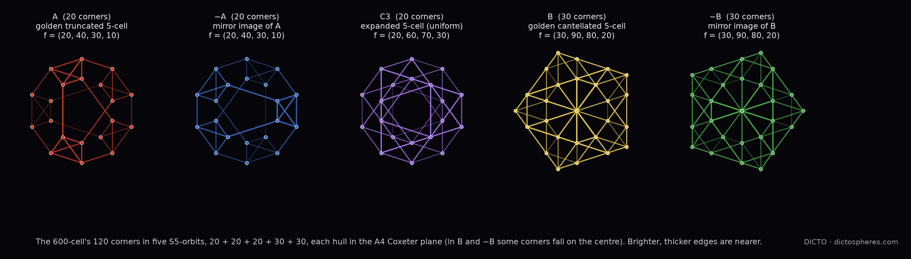
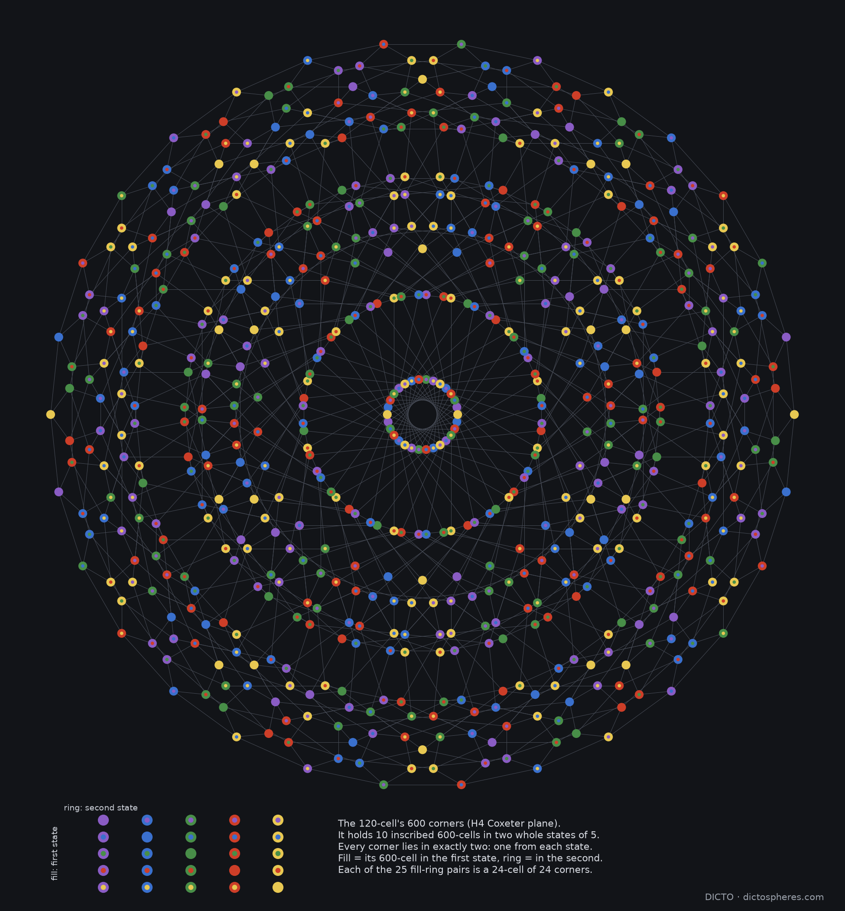
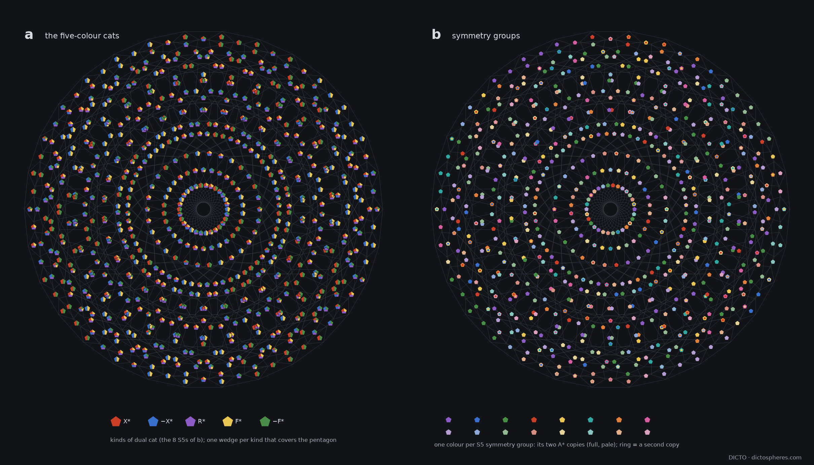

The Walls of the 4D 600-cell and 120-cell
Abstract. The 120-cell holds ten inscribed 600-cells in two states of five, every corner in exactly two. We show that it also holds exactly 1200 copies of the Golden Truncated 5-cell A, 1200 of the Golden Cantellated 5-cell B and 600 of the expanded 5-cell C3, the three kinds of shape that the 5-cell's symmetry group cuts from a 600-cell, all inside the ten 600-cells. Their walls fall into three classes, of 60, 300 and 1200 hyperplanes: every A copy is hidden in the 120-cell's own walls, while B and C3 copies are hidden only in the walls of their own 600-cell, and in each 600-cell the 120 B copies split its 1200 triangles exactly. The 120-cell's own cats are the polar duals of these: the duals of the five orbits of one S5 intersect exactly in the 120-cell, every plate of every dual lies on its 60 mirrors, and their fins cover all its pentagons and edges. A shape is hidden in a host when every central plate of its Vacuus, the hyperplane through the centre spanned by a two-face, is a wall of the host: a mirror, or a cross wall (a central section parallel to a pair of opposite cells). A and B are the solids of Silent Running [1], silent in harmonic degrees that their symmetry does not force. Three face lemmas show why they are hidden in the 600-cell: every triangle of its edges and every golden rectangle on its corners lies on a mirror, and every triangle of side equal to its radius lies on a cross wall. An index law reads the three kinds of Vacuus (heart, inherited heart, non-heart) off the symmetry of each plate. The walls cut the 600-cell into 4,291,200 chambers and the 120-cell, with all 1560 walls, into 593,236,800.
In Silent Running a submarine sits on the sea bed while the ships above listen for it; it is silent at the frequencies they listen for, and to them it is one more shape on the sea bed [1]. The image is DICTO's, and so is the answer he gave on 16 November 2026 to where the silent shapes were: they were not seen because they look like the walls of the 600-cell. The wood cannot be seen for the trees, and here the trees are in the walls. DICTO also turned round an old story, as usually told: a man finds his meat gone, his wife blames the cat, he weighs the cat and it weighs what the meat weighed. If this is the steak, where is the cat; if this is the cat, where is the steak? We call the shapes hidden in the walls cats (A, B, C3 and their copies, and in the Red Queen their duals), and the walls the steak. If the shapes hide in the walls, do they make up the solid that has those walls? This paper makes both questions exact. Theorem A says where A and B hide in the 600-cell and why; Theorem B, the main result, follows them into the 120-cell, where every corner belongs to two whole 600-cells at once; Theorem C counts the chambers that the walls cut.
The 600-cell has 120 corners, 720 edges, 1200 triangles and 600 tetrahedral cells; the 120-cell has 600 corners and 120 dodecahedral cells (Schläfli [3]). In DICTO's books they are the Queens: the White Queen is the 600-cell and the Red Queen the 120-cell.
The Vacuus of a pair. Let X be a convex polytope and O a point inside it. The ridges of X are its faces of dimension two less than X: edges in three dimensions, two-faces in four. Each ridge f spans with O one hyperplane through O, its plate; the cone from O over f is its fin. The Vacuus of (X, O) is the set of plates, each with the ridges on it. This widens DICTO's Vacuus of #87 [14] (fins from the centre to the edges) and #105 [15] (central slices carrying two-faces) to every polytope with a chosen centre. The centre matters: for a shape built on the corners of a host polytope, O is the host's centre in this paper. For A, B, C3 and every orbit of a group fixing the centre, this is also the centroid of the shape's corners; for other shapes the two differ, and the kinds and verdicts below can change (Proposition 4, §8).
Sheets and kinds. A plate is a full sheet if with each ridge f it carries the opposite ridge −f (through O), a shared sheet if it carries two or more ridges but is not full, and a single fin if it carries one. (X, O) is of the heart kind when every plate is a full sheet, of the non-heart kind when every plate is a single fin, and of the inherited heart kind otherwise (DICTO's names; Figures 1 and 2).
Walls of a host. For a host H with centre O, W(H) is its set of walls: its mirror hyperplanes and its cross walls, the hyperplanes through O parallel to a pair of opposite cells that are not already mirrors. A shape on H's corners is hidden in H when every plate of its Vacuus (about O) is in W(H), partly hidden when some are, not hidden when none is. For the 600-cell P, W(P) is 60 mirrors (normals along its corners) and 300 cross walls (normals along its cell centres, the corners of the dual 120-cell): 360 walls. For the dual 120-cell the cell-parallel sections are the 60 mirrors, so the dual pair has one wall system of 360 (exact; the mirrors carry both Queens' faces by #107's Corollary 2 [16]). The 60 and 300 normal directions are the rays of Waegell and Aravind's Kochen–Specker sets from the 600-cell and the 120-cell [18, 19].
Why the cross walls belong to the wall system. The cross walls are not mirrors: no reflection of the 600-cell fixes them. They are nevertheless canonical, for reasons that do not mention A or B. (1) They are defined from the 600-cell's cells as the mirrors are from its corners: the mirrors are the central hyperplanes perpendicular to the 60 corner axes, the cross walls those perpendicular to the 300 cell axes, so each is the central section parallel to a pair of opposite cells, and under duality the two families exchange roles (the 120-cell's cell-parallel sections are the 60 mirrors). (2) The 600-cell holds 25 inscribed 24-cells (Schoute; Denney et al. [9]). The central section of one of them parallel to a pair of its opposite octahedral cells holds 12 corners of the 600-cell, and the 25 × 12 = 300 such sections are distinct and are exactly the cross walls (exact; second implementation, data crosswalls_24cells.csv). So the cross walls are the 24-cells' own middle walls, inherited by the 600-cell. (3) Their 300 normals are the rays of Waegell and Aravind's 120-cell Kochen–Specker set [19]. In the order of discovery, the cross walls were first tested after B's 40 non-mirror plates were found on them (DICTO's ruling, 16 November); every later test in this paper used the fixed 360.
Coordinates. As in Silent Running, the 600-cell is placed in the sum-zero space of ℝ⁵, where the group S5 of the 5-cell permutes coordinates and φ = (1 + √5)/2. A, the Golden Truncated 5-cell, is the hull of the 20 permutations of (φ², φ², φ², φ, 0), B, the Golden Cantellated 5-cell, of the 30 permutations of (φ², φ², 1, 1, 0), and C3 of the 20 roots of A4, the uniform expanded 5-cell; with −A and −B they are the five S5-orbits of the 600-cell's corners [7, 8]. The 600-cell's edge is √2 and its radius φ√2.

Reproduction. Every exact claim has a script and a log in the folders of the meta line. The exact arguments of Theorems A, B and B′, Lemma 3 and Proposition 5 were redone by a second implementation written separately from the study scripts, and the chamber counts of Theorem C were recomputed from the intersection lattice (Appendix B); one script reruns them. Every number checked agrees, and W(H4)-transitivity in Lemma 3, stated in floating point in Version 1, is now exact. One step in Theorem B′ (d) is floating point: that the regions left uncovered on a plate have zero area (every region of positive area is certified by an exact witness point). Both implementations were written with an AI assistant; no specialist has reviewed the paper, so the results are reproducible, not independently refereed.
Lemma 1. Exact. (X, O) is of the heart kind exactly when X is centrally symmetric about O.
Proof. Put O at the origin. If X = −X, then with each ridge f, −f is a ridge, and it lies in the plate span(f) of f; f ≠ −f because f lies in a supporting hyperplane n·x = h with h > 0 and −f in n·x = −h. Conversely, if every plate is a full sheet, the set of ridges is closed under x ↦ −x; every corner of X lies on a ridge, so the corner set and its hull X are too. ∎
Proposition 2 (the index law). Exact. Let G be the symmetry group of X fixing O, f a ridge with plate H, Gf the symmetries keeping f and GH those keeping H. The ridges of the orbit G·f that lie on H number exactly |GH| / |Gf|. So (X, O) is non-heart exactly when GH = Gf for every ridge and no two orbits of ridges share a plate; heart exactly when −1 ∈ G (Lemma 1); and inherited heart otherwise, the shared sheets being the plates whose own symmetry is larger than that of their ridges, or that carry ridges of two orbits.
Proof. g·f lies on H exactly when the plate of g·f, which is g·H, equals H, that is when g ∈ GH; and Gf ⊂ GH, so the orbit of f under GH has |GH| / |Gf| members. ∎
This is the orbit–stabiliser count restated; its use is that the kind is read off each plate. Table 1 shows it on every shape with a shared or full sheet that we met under S5 (stabilisers computed in floating point in a second program; the counts agree with the exact face counts of the studies).
| shape | plates | ridges per plate | |GH| | |Gf| | kind |
|---|---|---|---|---|---|
| A | 20; 10 | 1; 1 | 6; 12 | 6; 12 | non-heart |
| B | 30; 40; 10 | 1; 1; 1 | 4; 6; 12 | 4; 6; 12 | non-heart |
| C3 (on the 600-cell) | 5 | 14 = 6 + 4 + 4 | 24 | 4 (six squares), 6 (eight triangles) | heart |
| runcitruncated 5-cells on the 120-cell | 30; 40; 5 | 1; 1; 10 = 6 + 4 | 4; 6; 24 | 4; 6; 4 and 6 | inherited heart |
| bitruncated 5-cell on the 120-cell | 10; 10 | 2; 2 | 12; 12 | 12 and 12; 6 | heart |
| uniform runcitruncated 5-cell; two generic seeds | 120 | 1 | 4 or 6 | 4 or 6 | non-heart |
| generic expanded 5-cell (3.1, 1, 1, 1, 0) | 70 | 1 | 4 or 6 | 4 or 6 | non-heart |
S5 does not contain −1, so a generic S5-orbit is non-heart; a plate gains symmetry only at special seeds. In the three shapes above with shared or full sheets under S5, those plates are the five hyperplanes "coordinate k equals the mean", kept by the 24 permutations of the other coordinates. A ridge lies on one only if all its corners have k-th coordinate equal to the mean, so one coordinate of the seed must equal the mean of the five (C3: (φ, 0, 0, 0, −φ); the two runcitruncated orbits of the 120-cell: means 0.809 and 0.5, each a coordinate). A and B fail this condition and have no shared sheet. Whether the condition is sufficient for every seed pattern is not checked. C3's five plates of 14 faces are the off-mirror slices found by #108 [17], which reports the runcinated 5-cell and the 4D permutohedron as the only polytopes of A4, B4, F4 and H4 with central slices off the mirrors carrying three or more faces.
Lemma 3 (the face lemmas). On the 600-cell's corners (edge √2, radius φ√2):
(a) every triangle of three edges (1200) lies on a mirror, 20 on each, and every pentagon of the dual 120-cell lies on a mirror, 12 on each (#107, Corollary 2 [16]);
(b) every golden rectangle with sides an edge and a radius (1800) lies on a mirror, 30 on each;
(c) every triangle of side equal to the radius (2400) lies on a cross wall, 8 on each;
(d) a face fixed point by point by a reflection of H4 lies on its mirror.
Proof. (d): the fixed points of a reflection are its mirror, and the plate is the span of the face. For (b) and (c), W(H4) is transitive on each class (floating point), so one face of each settles the wall. As unit quaternions (the 600-cell at radius 1), the radius triangle 1, ½(1, 1, 1, 1), ½(1, 1, 1, −1) spans the hyperplane with normal (0, 1, −1, 0), a cell-centre direction, so it is a cross wall; the rectangle 1, ½(1, 1, 1, 1), ½(φ−1, 0, 1, φ), ½(φ, −1, 0, φ−1) has normal ½(0, −φ−1, φ, −1), a corner, so it is a mirror (both exact by hand). The counts per wall follow from transitivity (floating point; data/face-lemmas.log, FINAL ok). ∎
Theorem A (the silent solids are hidden in the 600-cell). Exact. Every plate of A and of B is in W(P). A's 30 plates (20 on edge triangles, 10 on hexagons) are mirrors. Of B's 80, the 10 on edge triangles and the 30 on golden rectangles are mirrors, and the 40 on radius triangles are cross walls. A's and B's mirrors share exactly the 10 mirrors of S5, and together they are all 60. C3's 70 faces lie on 5 cross walls, 14 on each. A and B are non-heart.
Proof. A's triangles have side √2 and are edge triangles (Lemma 3 a). Each of A's hexagons is fixed point by point by a transposition of two coordinates, a reflection of H4 (Lemma 3 d). B's √2-triangles, its √2 × φ√2 rectangles and its φ√2-triangles are edge triangles, golden rectangles and radius triangles (Lemma 3 a, b, c). That each plate carries one face, the counts 30 and 80, the shared 10 mirrors and C3's plates are the exact Q(√5) run of the walls study (each plate's normal an exact null vector, matched exactly against the 360 wall normals), which also confirms the rest. Table 2 gives the kinds of plate and their slices; Figure 3 shows the five orbits. ∎
| kind | plates | ridge (between cells) | slice: corners, edges, faces | wall |
|---|---|---|---|---|
| A1 | 20 | edge triangle (tetrahedron | golden truncated tetrahedron) | 6 = 6 + 0, 9, 5: a frustum | mirror |
| A2 | 10 | hexagon, sides √2, φ√2 (two golden truncated tetrahedra) | 10 = 6 + 4, 15, 7 | mirror |
| B1 | 20 | radius triangle (octahedron | golden prism) | 21 = 3 + 18, 33, 14 | cross |
| B2 | 20 | radius triangle (golden cuboctahedron | octahedron) | 21 = 3 + 18, 33, 14 | cross |
| B3 | 30 | golden rectangle (golden cuboctahedron | golden prism) | 13 = 9 + 4, 24, 13 | mirror |
| B4 | 10 | edge triangle (two golden cuboctahedra) | 15 = 6 + 9, 24, 11 | mirror |



So A and B are hidden because they are made of the 600-cell's corners with few faces per plate, not because of the twist of Silent Running: the same lemmas hide most symmetric shapes on those corners (§8).
Proposition 4 (the special cuts). Exact. Remove from the 600-cell an independent set C of k corners (no two adjacent) and take the hull of the rest: a special cut of Dutour Sikirić and Myrvold, who count 314,248,344 of them up to symmetry [6]. About the 600-cell's centre, every special cut is hidden in the 60 mirrors; it is of the heart kind when C is antipodal and of the inherited heart kind otherwise. The grand antiprism (Conway and Guy [5]) removes adjacent corners and is not a special cut.
Proof. In [6, §2] the 20 tetrahedra at a removed corner v become one icosahedral cell; so every two-face of the cut is a triangle of the 600-cell, on a mirror (Lemma 3 a). Each corner lies in 30 triangles and no triangle has two corners of C, so 1200 − 30k triangles remain. Each kept corner has at most 3 neighbours in C, since its neighbours form an icosahedron, in which no 4 corners are pairwise non-adjacent; counting edges between C and the rest, 12k ≤ 3(120 − k), so k ≤ 24 (as in [6]) and at least 480 triangles lie on 60 mirrors, so some mirror carries two or more. By Lemma 1 the cut is heart exactly when it is centrally symmetric, that is when C is antipodal. ∎ Example: three corners at 120° to one another on one hexagon of the 600-cell are independent, sum to zero and are not antipodal; removing them leaves 1110 triangles on the 60 mirrors (3 mirrors with 14, 36 with 18, 21 with 20), inherited heart, with the centroid at the centre (floating point, review). Measured from its own centroid instead, the 600-cell less one corner has 915 plates, 900 of them single fins on no wall: the centre must be stated.
DICTO's image for the 120-cell is "many half-alive cats coexisting", after Schrödinger's cat, in two states at once: every corner lies in two inscribed 600-cells, one of each state, so the cats of the two states share corners, while no cat belongs to both states. The images are his; no physics is claimed. Let Q be the 120-cell and P1, …, P10 its inscribed 600-cells (on its corners, not dual to it). W(Q) is Q's 60 mirrors and the 300 hyperplanes perpendicular to its corner axes (the cross walls of its dual 600-cell).
Theorem B (the cats in the Red Queen). Exact unless marked.
(a) Q has exactly 10 inscribed 600-cells. Every corner lies in exactly 2. They form two states of 5 disjoint 600-cells, and the two through a corner are in different states; two from different states meet in exactly 24 corners, a 24-cell.
(b) Q holds exactly 1200 copies of A (A and −A), 1200 of B (B and −B) and 600 of C3, all inside the Pi, 120, 120 and 60 in each; under Q's symmetry group each is one class, with stabilisers of order 12, 12 and 24.
(c) The walls W(P1) ∪ … ∪ W(P10) are 1560: the 60 mirrors of Q, each a cross wall of all ten; the 300 other walls of Q, each a mirror of exactly the 2 Pi through that corner axis; and 1200 hyperplanes not in W(Q), each a cross wall of exactly 2 Pi. Every A copy is hidden in Q itself: its plates use only the 300. Every B copy and every C3 copy is hidden in its own Pi but not in Q: B copies use all three classes, C3 copies the 60 and the 1200.
(d) In each Pi, every one of its 1200 triangles is a face of exactly one of its 120 B copies and of exactly two of its 120 A copies: the B copies split the triangles exactly.
Proof. (a) Each corner of Q has 24 corners at 36°, which fall into two sets of 12 with no pair at 36° between the sets (floating point, review). An inscribed 600-cell through the corner must contain one whole set, as its 12 neighbours, and each set generates one 600-cell under reflection; so at most 2 pass through each corner, and the compound of ten 600-cells (Coxeter [10, Table VII]; Denney et al. [9]) has 2 through each, since 10 × 120 = 2 × 600. Each was checked to be exactly closed under its own reflections; the states, the 24-corner meetings and the disjointness within a state are exact checks. (b) Inside one 600-cell the subgroups S5 that cut it into A, −A, C3, B, −B are exactly the 60 generated by an A4 set of its reflections, all conjugate (normaliser of order 240), each giving one copy of each orbit. The search over all of Q's corners first filters by distances in floating point (tolerance 10−6, which can only admit too many) and then checks each candidate's full Gram matrix exactly, so it is complete; it finds no A or B copy outside the Pi. The stabiliser orders give 14400/12 = 1200 and 14400/24 = 600. (c) Theorem A carried into each Pi by an exact similarity, checked directly on one A and one B copy in each; the classes of the 1560 walls and their hosts are exact checks, recounted in floating point by a second program and in exact arithmetic by the second implementation. (d) Each A copy has 20 of the 600-cell's triangles as faces (its 5 tetrahedra are cells of the 600-cell) and each B copy 10 (its edge triangles, Table 2); the 600-cell's symmetry group is transitive on its triangles and on each family of copies, so each triangle is a face of 120 × 20 / 1200 = 2 A copies and 120 × 10 / 1200 = 1 B copy. ∎
| copies | in each Pi | in Q | through each corner | M | X | N | hidden in |
|---|---|---|---|---|---|---|---|
| A, −A | 120 | 1200 | 40 | 0 | 300 | 0 | Q and its Pi |
| B, −B | 120 | 1200 | 60 | 60 | 300 | 1200 | its Pi only |
| C3 | 60 | 600 | 20 | 60 | 0 | 1200 | its Pi only |

Proposition 5 (half-cats). Exact computation; the full enumeration is in the supporting data (all 90,000 cases and the 18 patterns, second implementation, data prop5_cases.csv.gz and prop5_patterns.txt). Fix an S5 in a 600-cell of the first state. Of its 5 shared 24-cells, one is split 0 A, 12 C3, 12 B and the other four 10 A, 2 C3, 12 B; so every shared 24-cell is half B in each of its two 600-cells, whatever S5 is chosen. Over all pairs of choices (25 × 60 × 60 = 90,000 cases) the corners of a shared 24-cell fall into 18 patterns of (orbit in the first state, orbit in the second); in 1500 cases (1 in 60) every corner is in the same orbit in both. No copy lies in both states (the 600-cells of a state are disjoint), but A and B copies from the two states share at most 6 corners and always share walls (two C3 copies can share 12 corners and no wall): two A copies at least 2, an A and a B copy at least 1, two B copies at least 5.
The dual cats. DICTO's words of 16 November: "why the red queen but not the white, is there perhaps a false underlying premise ... something previously too elegant and perfect to question?" The premise was inclusion. An inscribed 600-cell uses the 120-cell's corners, but its edges are diagonals of the 120-cell, so its copies never make the 120-cell's edges or pentagons. The two Queens are related by duality, and DICTO's hypothesis, confirmed below, is that the Red Queen's own cats are the polar duals of the White Queen's. Let P be the 600-cell dual to Q (its corners along Q's cell centres), take polarity about the common centre with r² = |corner of Q|², and write X* = {y : x·y ≤ r² for every corner x of X}.
Theorem B′ (the dual cats). Exact in Q(√5) unless marked.
(a) P* = Q and Q* = P. For each of P's 60 S5s, Q = A* ∩ (−A)* ∩ C3* ∩ B* ∩ (−B)*, and the five duals use Q's 120 cell walls once each.
(b) A* has 10 corners, 30 edges, 40 triangles and 20 tetrahedral cells: the 5-cell with a low pyramid on each cell, its Kleetope (the polar of a truncation is the Kleetope of the polar; Grünbaum [21]); 5 of its corners are corners of Q. B* has (20, 80, 90, 30), with 30 triangular bipyramids as cells; C3* has (30, 70, 60, 20), with 20 cells of 8 corners and 6 quadrilaterals (trigonal-trapezohedron type). No names for these three duals were found in the sources checked.
(c) Every plate of every dual copy lies on one of Q's own 60 mirrors, 10 per copy (the mirrors of its S5), and none on the 300 or the 1200 other walls. A* (4 faces on each plate) and B* (9) are of the inherited heart kind; C3* (6) is heart.
(d) The fins of the 120 A* copies, and those of the 120 B* copies, each cover all 720 pentagons and all 1200 edges of Q whole, cut off at their faces (each dual contains Q, so finite and radial fins agree): every pentagon is covered by 10 A*, 10 B* and 5 C3* copies, and each copy covers a pentagon whole or not at all, 60 pentagons in all (whole by the union of that copy's fins on the pentagon's plate; a single fin of B* holds only some of them, of C3* none). The fewest copies that cover every pentagon are 16 A*, 16 B* or 22 C3* (each cover re-checked as a set union; optimality certified: no cover of 15, 15 or 21 copies exists, by DRAT proofs from the SAT solver CaDiCaL checked by the independent proof checker drat-trim, without symmetry breaking (the solvers HiGHS and CP-SAT agree); the covers, the instance, the formulas and the check logs are in the supporting data. No short hand-checkable bound reaches the optimum: the linear relaxation gives 12, counting over mirrors 12, 12 and 18); no selection of dual copies covers each pentagon exactly once (complete exact-cover search), so there is no counterpart of Theorem B (d).
(e) Dualising the inclusion copies of Theorem B instead (the polars of all 3000 copies in the ten inscribed 600-cells) puts every fin plate on the 300 corner-axis walls of Q and covers no pentagon.
(f) Each corner of Q is a corner of exactly one A* copy: the 120 A* copies split Q's 600 corners into 120 sets of 5, one corner from each of the ten inscribed 600-cells. One level down the two states return: P splits into 5 disjoint 24-cells in 10 ways, each of its 25 24-cells lies in exactly 2 of the splits, one from each of two states of 5, and one S5 cuts every split as (A, C3, B) = (0, 12, 12) once and (10, 2, 12) four times, in both states: the numbers of Proposition 5.
Proof. (a) Polarity reverses inclusion, so A ⊂ P gives A* ⊃ P* = Q; every cell of A* is polar to a corner of A, a corner of P, so it lies in a cell wall of Q; and the five orbits are all of P's corners, so the five duals cut out exactly Q. (c) The plate of the dual face polar to an edge ab of a copy is the hyperplane perpendicular to a − b, and every edge of an S5-orbit shape runs along a root of that S5, whose mirror is a mirror of Q. (b), (e), (f) and the coverage of one pentagon and one edge in (d) are exact computations in the study, carried to all pentagons and edges by symmetry. Controls: with r² halved or doubled, P* has no corner on Q, and the fins of A* and B* cover no pentagon. ∎
So the premise was the false part: the Red Queen's cats are not her inscribed White Queens but the duals of the White Queen's cats. Each Queen has her own cats, and duality relates them. The limits are these. Coverage of the pentagons comes from the shape type, not from the golden form: the fin over the dual face of an edge ab is the cone of directions in which a and b are both farthest, and every S5-orbit of the same type has the same cones, so the non-golden orbits (φ², φ², φ², 3/2, 0) and (φ², φ², 6/5, 6/5, 0) cover the pentagons too. What only the golden form gives is the exact corner fit: the duals' cells on Q's cell walls, A*'s corners on Q's corners, and Q as the intersection of the five duals; the non-golden orbits give none of these.

Theorem C (the chambers). Exact counts, by Zaslavsky's sum of |Möbius| values [12] in exact Q(√5) arithmetic, confirmed by floating-point splitting and by a second floating-point count inserting the walls one at a time. The lattice data behind the counts are in Appendix B.
(a) The 360 walls of the dual pair cut each Queen into 4,291,200 = 14400 × 298 chambers: 25 cross walls pass through one Coxeter chamber of the mirrors and cut it into 298 pieces of 15 combinatorial types (no two congruent, floating point). Each chamber is a pyramid from the centre over a piece of a cell.
(b) The 1560 walls of Theorem B cut Q into 593,236,800 = 14400 × 41,197 chambers; 174 walls pass through one Coxeter chamber.
(c) The characteristic polynomial of the 60 mirrors is (t − 1)(t − 11)(t − 19)(t − 29), the classical factorisation by the exponents of H4 [20], giving 14400 chambers; that of the 360 walls is (t − 1)(t³ − 359t² + 45959t − 2099281), whose cubic factor is irreducible over Q (2099281 = 29 · 191 · 379, and no divisor is a root).
(d) A's own 30 plates cut A into 3360 chambers, of which 120 are exactly the 600-cell's Coxeter chamber (in A's 5 tetrahedra, each cut by its 6 symmetry planes into 24); B's own 80 plates cut B into 62,880 chambers, none a Coxeter chamber of the 600-cell.
Walls through the centre cannot cut out a solid round the centre, so the solids A and B are never chambers; they are unions of chambers, A of 3360. That is the exact form of the third answer to the cat and the steak: by corners the five orbits are the 600-cell, by walls A and B carry all its mirrors, and by solids they are made of its chambers without being any one of them.
| shape (finder) | faces | plates | faces per plate | kind | walls |
|---|---|---|---|---|---|
| 600-cell; 120-cell (Schläfli [3]); 24-cell; snub 24-cell (Gosset [4]) | 1200; 720; 96; 480 | 60; 60; 12; 60 | 20; 12; 8; 8 | heart | all (24-cell: cross walls only) |
| grand antiprism (Conway and Guy [5]) | 720 | 60 | 12 | heart | all mirrors |
| special cuts, C not antipodal (Dutour Sikirić and Myrvold [6]) | 1200 − 30k | 60 | 6 to 20 (tested) | inherited heart | all mirrors |
| special cuts, C antipodal | 1200 − 30k | 60 | 4 to 20 (tested) | heart | all mirrors |
| C3 (orbit in [7, 8]) | 70 | 5 | 14 | heart | all cross walls |
| A, −A, B, −B and their copies (orbits in [7, 8]; solids [1]) | 30; 80 | 30; 80 | 1 | non-heart | all |
| Q's two S5-orbit 5-cells | 10 | 10 | 1 | non-heart | all (10 mirrors) |
| Q's two runcitruncated 5-cells | 120 | 75 | 1 or 10 | inherited heart | 30 mirrors + 5 cross; 40 none |
| Q's bitruncated 5-cell | 40 | 20 | 2 | heart | 10 of 20 |
| 600-cell inscribed in Q (Coxeter's compound [10]) | 1200 | 60 | 20 | heart | all, on W(Q)'s 300 corner-axis walls |
In every shape of Table 4 that is not centrally symmetric, every plate with two or more faces is a wall of the host (the runcitruncated 5-cells' 5 shared sheets are cross walls; their 40 single fins are on no wall). Of the 15 uniform polytopes of H4 (Wythoff's construction; the complete list by Conway and Guy [5], proved complete by Möller [13]) all are heart and only the two Queens are hidden: the rectified, truncated and bitruncated members have 60 mirror plates and 1200 on no wall, the cantellated and cantitruncated 60 mirrors and 3720 or 4200 on no wall, the runcinated, runcitruncated and omnitruncated no plate on any wall; their mirror faces follow #107's Mirror Law [16].
Proposition 6 (the golden station). Exact. On DICTO's Hopscotch line S(μ) = 600-cell ∩ μ·120-cell between the Queens, the truncated-600-cell member at μ = 1/2 + √5/5, which cuts each edge at 1/2 − √5/10 = 1/(1 + φ²) of its length from each end, has 1440 corners, 720 cells, 2400 triangles and 1200 golden hexagons, and its Vacuus is exactly W(P): 20 hexagons on each mirror, 8 triangles on each cross wall.
Proof. Each hexagon lies inside a triangle of the 600-cell, so it is on a mirror (Lemma 3 a); the content is the cross-wall half, checked exactly: the corner triangles lie on the 300 cross walls, 8 on each. At truncation 1/3 or 1/5 instead, the 1200 triangle plates lie on no wall (floating point, review). ∎ The station shape was not found in the sources checked.
Hidden is common on the corners. By Lemma 3, a shape on the 600-cell's corners whose faces are edge triangles, golden rectangles, radius triangles or faces fixed by a reflection is hidden, whatever its harmonics. So hidden does not single out the silent shapes. Every full-dimensional orbit hull of Koca et al.'s five maximal subgroups of W(H4) [7] on the 600-cell's corners is hidden, except the 12- and 20-corner duopyramids (exact wall tests on floating-point hulls); the snub 24-cell, the grand antiprism and the special cuts are hidden and are not silent shapes.
The chance baseline. Random subsets of the corners: in 100 samples each, the mean share of plates on no wall is 28% for 20 corners and 20% for 30 corners, and no sample was all-wall; so all-wall is rare among random subsets of these sizes (under about 3% at this sample size), not impossible. For 60 corners the share is 2% and 60 of 100 samples were all-wall.
The ordinary orbits. The S5-orbits of (φ², φ², φ², 3/2, 0) and (φ², φ², 6/5, 6/5, 0) have 20 of 30 and 70 of 80 plates on no wall; but they are not on the 600-cell's corners, so they compare corners with non-corners, not twist with no twist.
Other shapes. R of Silent Running is C3; the four 30-point silence sets of the 600-cell are hidden; the 60-point ones are hidden, as most 60-point subsets are; the two 240-point silence sets of the 120-cell are not (240 and 420 plates on no wall).
The Queens hide A, B and C3 because the 5-cell's group W(A4) lies inside the 600-cell's group W(H4): the extra mirrors and the cross walls of the larger group are the walls the cats sit in. This section asks where else a permutation group hides inside a larger reflection group, and runs the construction of §2 there. For rank 5 and more, Theorem D shows that only E7 and E8 do (the heptagon's group S7, n = 6, has no host), with rational coordinates and no φ. We call these hosts the integer Queens. They answer the question of this paper in the same terms, and the answer differs: their cats are hidden, but only in cross walls.
Theorem D (where a permutation group hides). Exact. Let X be a finite set in the sum-zero space of ℝn+1, n ≥ 5, mapped to itself by the permutations Sn+1 of the coordinates, and let G be its symmetry group.
(a) The reflections in G generate W(An), or W(E7) when n = 7, or W(E8) when n = 8; each En containing the given W(An) is unique.
(b) X has the En symmetry exactly when it is a union of whole W(En)-orbits; otherwise G is Sn+1 or Sn+1 × {±1}, as X ≠ −X or X = −X.
Proof. The reflections of G generate a normal subgroup R ⊇ W(An), irreducible since An acts irreducibly. The An reflections are conjugate in R, so the An roots lie in one root length of R; in Bn and Cn that length is Dn or A1n, and An is connected. Non-crystallographic groups stop at rank 4 (Coxeter's classification [22]). With roots of norm 2, the An root lattice has full rank in that of R, so det(An)/det(R) = (n + 1)/det(R) is the square of the index. The Cartan determinants are n + 1 for An, 4 for Dn, and 3, 2, 1 for E6, E7, E8; the ratio is a square only for An, E7 (8/2 = 2²) and E8 (9/1 = 3²), while D7 gives 2, D8 gives 9/4 and E6 gives 7/3. The lattice of R lies between An and its dual, and the quotient An*/An is cyclic of order n + 1, so it has exactly one subgroup of index 2 (n = 7) or 3 (n = 8): R is unique. G normalises R, so G lies in the automorphisms of its roots, W(An) × {±1} or W(En) (which contains −1). This is a short special case of Borel and de Siebenthal's subsystems of maximal rank [25]. ∎
So the only hosts of a permutation group of rank 5 or more are the integer Queens: E8 = A8 ∪ (A8 + [3]) ∪ (A8 + [6]) and E7 = A7 ∪ (A7 + [4]), glued from the An lattice as in Conway and Sloane [23]. Scaled by 3, E8 is the set of integer vectors of ℝ⁹ with sum 0 and all coordinates congruent mod 3. A test without the theorem agrees: every reflection of X maps some corner x to a corner y, so its root is parallel to x − y, and testing every difference line exactly finds all the reflections of each union of orbits. Of the 7, 31, 3 and 3 unions of S-orbits in the four shells of Table 5, only the four whole shells gain the larger group (orders 696,729,600 for E8 and 2,903,040 for E7); every other union keeps exactly the 36 (or 28) reflections of S9 (or S8). As must fail, the A8 roots with ±Δ(9,3) at twice the radius keep only 36.
| shell (corners) | S-orbit | corners | plates | kind | S / E / cross / none | verdict |
|---|---|---|---|---|---|---|
| 4_21 (240) | A8 roots, expanded 8-simplex | 72 | 9 | heart | 0 / 0 / 9 / 0 | hidden |
| ±Δ(9,3), birectified 8-simplex (×2) | 84 | 108 | inherited heart | 36 / 0 / 72 / 0 | hidden | |
| 2_41 (2160) | t1,6 (norm 4 in A8) | 756 | 1971 | heart | 36 / 0 / 639 / 1296 | partly |
| ± stericated 8-simplex (×2) | 630 | 2322 | non-heart | 36 / 0 / 576 / 1710 | partly | |
| ± truncated 8-simplex (×2) | 72 | 108 | non-heart | 36 / 0 / 0 / 72 | partly | |
| 2_31 (126) | A7 roots, expanded 7-simplex | 56 | 8 | heart | 0 / 0 / 8 / 0 | hidden |
| Δ(8,4), trirectified 7-simplex | 70 | 56 | heart | 28 / 0 / 28 / 0 | hidden | |
| 3_21 (56) | ±Δ(8,2), rectified 7-simplex (×2) | 28 | 84 | non-heart | 28 / 0 / 0 / 56 | partly |
The walls of the integer Queens. Exact. Each host is one W(E)-orbit, so its facet normals are images of fundamental weights (Humphreys [27]); testing each weight gives 4_21 17,280 7-simplices and 2160 7-orthoplexes, and 2_31 576 6-simplices and 56 copies of 2_21, with ridge counts 207,360 and 4788 as listed in [26]. With the walls of §2, 4_21 has 120 mirrors (36 of S9 and 84 hidden) and 9720 cross walls, 9840 in all; 2_31 has 63 mirrors (28 and 35) and 316 cross walls, 379. The facets and ridges of each orbit hull follow from the rearrangement inequality (Hardy, Littlewood and Pólya [24]): the face of perms(a) in direction c is fixed by the ordered level sets of c, so they are the ordered partitions into 2 or 3 blocks. Controls: the tetrahedron and octahedron of Figure 1 and the cuboctahedron give their kinds again (non-heart, heart, heart), and generic orbits fall mostly on no wall (4500 of 4509 plates for E8, 1960 of 1968 for E7).
Theorem E (cats in cross walls only). Exact facets; plate normals certified.
(a) The root orbits are hidden: the A8 and A7 roots are of the heart kind, with all their 9 and 8 plates on cross walls of the host, as C3's are in the 600-cell; ±Δ(9,3) is of the inherited heart kind, on 36 mirrors of S9 and 72 cross walls; Δ(8,4) is of the heart kind, on 28 mirrors of S8 and 28 cross walls.
(b) The orbits of 2_41 and 3_21 are partly hidden.
(c) No plate of any orbit lies on a hidden mirror, the 84 mirrors of E8 outside S9 or the 35 of E7 outside S8.
The root-orbit plates are the hyperplanes "coordinate k equals the mean", the kind of plate on which C3's 70 faces lie, 14 on each of 5 cross walls (Theorem A), and the 72 single plates of Δ(9,3) have normals in the class (5, 2, −1⁷), pointing at corners of 2_41: they are the orthoplex-pair cross walls of 4_21. In the 600-cell the larger symmetry reaches the cats through its hidden mirrors: A's and B's plates together fill all 60 mirrors of H4, 50 of them outside S5 (Theorem A); in the integer Queens it reaches the cats only through cross walls. The silence is the same kind, but the walls that keep it differ.
Credit and prior art. The four polytopes are Gosset's [4], named in Coxeter's notation [10]; the gluing of E8 and E7 from A8 and A7 is in Conway and Sloane [23]. The splits 240 = 72 + 84 + 84 and 56 = 28 + 28 are on the Wikipedia pages for 4_21 and 3_21 [26], and 126 = 56 + 70 is the standard A7 gluing. Not found in the sources checked (Appendix A): the split 2160 = 756 + 630 + 630 + 72 + 72, the list of unions that gain the E symmetry, and every wall and Vacuus result of Table 5 and Theorem E. Theorem D follows from the classification; what is ours is its use as a test for hidden symmetry.
Shadows. DICTO observed that "all of the shadows seem to carry interconnected lattices of possible vacuus". When a Queen is projected to 3D along d, a wall with normal n stays flat, as a plane through the shadow's centre, exactly when n·d = 0; a shape whose edge fins all lie in kept walls is a possible Vacuus. Since cross-wall normals are cell-centre directions of the 600-cell and mirror normals those of the dual 120-cell, and a cell is seen side-on exactly when its centre direction is perpendicular to d, the kept walls are the central planes parallel to the side-on cells, for every d. The counts in the four standard views are (mirrors, cross walls) = (15, 30), (6, 10), (4, 12), (6, 27) for the corner-, edge-, face- and cell-first views of the 600-cell (the cell-, pentagon-, edge- and corner-first views of the 120-cell); the shadows of each type reach all 360 walls, and joining shadows that share a wall gives a connected graph (exact). In the corner-first view the icosahedra and the dodecahedron are possible Vacuus (30 of 30 mirror plates); in the 120-cell's cell-first view, the dodecahedra and a truncated icosahedron (Archimedes' solid, named by Kepler [11]) at height ±(1/8 + φ/4), with 30 mirror and 60 cross plates (Figures 8 and 9).


Skeletons. DICTO proposed that Vacuus fins may form the Queens' skeletons. They do, for both Queens, each with her own cats. In the 600-cell every triangle is a face of a B copy (Theorem B (d)). In the 120-cell the fins of the dual copies cover every pentagon and every edge whole, on its own mirrors (Theorem B′ (d)). The inclusion copies of Theorem B, carried outward to the 120-cell's surface, cover its edges but none of its pentagons, and dualised they still cover none (Theorem B′ (e)): that is the false premise of §5, not a gap in the Red Queen's skeleton.
Volumes and overlaps. Exact. Of the 600-cell's volume, the hull of A is (1 + 3φ)/40, of B (3 + 5φ)/24 and of C3 (14 + 7φ)/60. The five hulls together cover 0.6504 of it (inclusion and exclusion over 31 exact intersections; Monte Carlo in the review 0.6511 ± 0.0005); their common part is a uniform bitruncated 5-cell, (23/750 + 23φ/1500) of it, and A ∩ B is a golden cantitruncated 5-cell, 0.1308 of it.
Censuses. In DICTO's White Queen atlas (#63, 62 slice types) and Red Queen atlas (124), with plates lifted along the slicing axis, most slices are partly hidden; the fully hidden ones are the 600-cell's corner-first slices with 32 and 12 corners and its cell-first tip tetrahedron, and the 120-cell's corner-first slices with 60 and 20 corners and two cell-first tetrahedra.
For Section 9 (18 November 2026): Wikipedia [26], the pages for 4_21, 2_41, 2_31, 3_21 and E8 read (the 2_41 page gives the coordinates 16 + 1120 + 1024, not an A8 split); our reference library searched (E8, E7, Gosset, 4_21, hypersimplex, Koca, root system, Wythoff), titles and abstracts read of the hits: Koca, Al-Ajmi and Koca 2009 (arXiv:0906.2109, the snub 24-cell from the E8 roots), Dechant 2017 (arXiv:1712.06436, from the icosahedron to E8), arXiv:2311.01486 (the isomorphism of H4 and E8), Deza and Shtogrin (math/0407527, Wythoffians), Ozdes Koca et al. (arXiv:1811.12176, 2604.10574, An lattices). None splits 2_41 under S9, and none treats walls or the Vacuus. Not opened: Gosset 1900, Coxeter 1948 for these polytopes, Conway and Sloane [23], Humphreys [27], Borel and de Siebenthal [25].
Read in full on 16 November 2026: Koca, Ozdes Koca and Al-Ajmi [8] (arXiv:1106.2957; §3 names the W(H3) orbits, for example icosahedra, dodecahedra, an icosidodecahedron and a "quasi regular truncated dodecahedron" with two edge lengths, but §4 gives the W(A4) orbits of the 600-cell and the 120-cell as Dynkin labels only); Dutour Sikirić and Myrvold [6] (arXiv:0708.3443v2). Read in part: Waegell and Aravind [18, 19] (journal details checked against Crossref); Koca et al. 2006 [7] (library copy, the subgroups and orbit decompositions); Denney et al. [9] (Facts 2 and 5, §3); Coxeter [10] (as for Silent Running: §§8.2–8.8, §§13.4–13.7, Tables V–VII; Table V(i), (ii) and (iv) checked for the cross walls on 16 November 2026); Wikipedia [2]. From the studies: Koca, Al-Ajmi and Koca 2009 (arXiv:0906.2117, the grand antiprism) and 2011 (the snub 24-cell), listed but not read in full; web searches on diminished 600-cells and on the special cuts. Not opened: Conway–Guy 1965; Blind and Blind; Möller 2004; Sadoc–Mosseri (1999); Elser–Sloane 1987. DICTO's own work: #63, the Red Queen atlas, #87, #105, #107, #108, the Hopscotch line study, the studies of the meta line and the review of 16 November. None of these sources reads a shape as a Vacuus, uses cross walls as a test, counts the golden copies in the 120-cell or counts the chambers of the 360 or 1560 walls.
Zaslavsky's theorem [12]: an arrangement of central hyperplanes in ℝ⁴ cuts space into |χ(−1)| chambers, where χ(t) = ΣX μ(X) tdim X runs over the flats X (intersections of walls), and μ is the Möbius function of the intersection lattice (μ = 1 on ℝ⁴, −1 on each wall, h − 1 on a plane in h walls, and on a line minus the sum over the flats above it). For the 360 walls of the dual pair (exact, in Q(√5); a second implementation, studies/2026-11-17-independent-checks/110-chambers, with and without symmetry reduction):
| rank | flats | by h (h: number) | Σμ |
|---|---|---|---|
| 0 | 1 | ℝ⁴ | 1 |
| 1 | 360 | 60 mirrors, 300 cross walls | −360 |
| 2 | 35,042 | 2: 27,000 · 3: 6,600 · 4: 450 · 5: 792 · 9: 200 (16 orbits; μ = h − 1) | 46,318 |
| 3 | 803,160 | 3: 478,800 · 4: 162,000 · 5: 72,000 · 6: 48,600 · 7: 18,000 · 8: 7,200 · 10: 9,840 · 12: 4,200 · 15: 1,200 · 16: 960 · 33: 300 · 45: 60 (149 orbits) | −2,145,240 |
| 4 | 1 | the centre | 2,099,281 |
So χ(t) = t⁴ − 360t³ + 46318t² − 2145240t + 2099281 = (t − 1)(t³ − 359t² + 45959t − 2099281), and |χ(−1)| = 1 + 360 + 46318 + 2145240 + 2099281 = 4,291,200. The Σμ of each line class (h: Σμ) is −478,800, −352,800, −295,200, −248,400, −151,200, −97,200, −182,400, −115,200, −57,600, −60,240, −76,500 and −29,700, in the order of Table B1; the per-orbit values are in the supporting data. A second count, inside one open Coxeter chamber of the mirrors, uses only the 25 cross walls that meet it: their restricted arrangement has Zaslavsky terms 1 + 25 + 138 + 134 = 298, and 14400 × 298 = 4,291,200.
For the 1560 walls of Theorem B the same two methods give χ(t) = (t − 1)(t³ − 1559t² + 1024679t − 295592161), |χ(−1)| = 593,236,800, and inside one Coxeter chamber the 174 walls that meet it have terms 1 + 174 + 5981 + 35041 = 41,197 (exact). The full list of line orbits (about 172 million lines) is not tabulated; the polynomial and the in-chamber terms are in the supporting data.